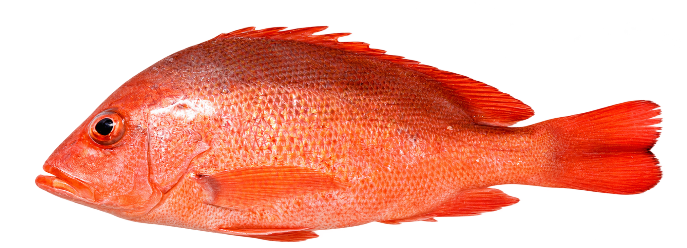
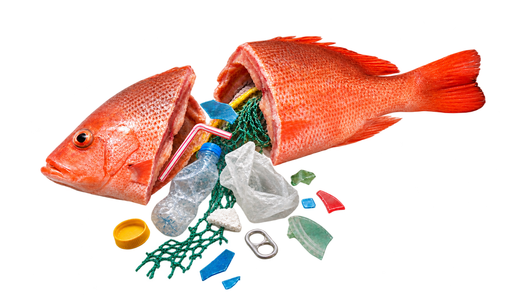
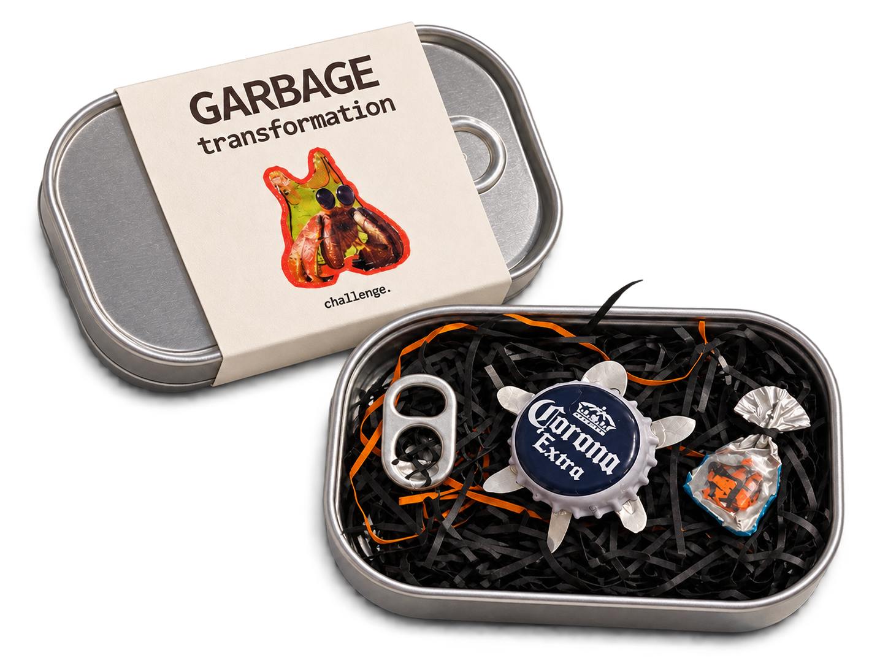

DRAG TO CUT ↘按住滑鼠沿斜線劃過魚身 / 手指滑動


SCROLL TO EXPLORE ↓
01 / ABOUT PIKOTRASH HAS
TRASH HAS
NEW PLANS.

海洋垃圾，也能成為你日常穿搭的一部分。
PIKO 以海洋廢棄物與海洋意象為出發點，將材料、造型與趣味結合，創作可自行搭配的鞋扣與鈕扣。你選擇的每個小配件，都能成為認識海洋議題的起點。
100% MORE PERSONALITY
LESS BORING ACCESSORIES
LESS BORING ACCESSORIES
02 / CANNED COLLECTIONWHAT'S
WHAT'S
IN THE CAN?
六個罐頭，六種驚喜。點擊任一罐頭，探索系列與 DIY 配件。
TAP A CAN TO OPEN ↗

04 / THE SECOND LIFETRASH TO
TRASH TO
TREASURE.
從材料到穿搭配件，每一次轉化都有自己的故事。
塑膠廢棄物 → 再製鞋扣
BEFORE / OCEAN WASTE
AFTER / NEW IDENTITY
06 / PIKO EXTENDED IDENTITY
BRAND EXTRAS.
品牌衍生周邊｜名片、明信片、說明書及貼紙。
探索 PIKO 從鞋扣延伸至日常的視覺設計。
點擊作品探索設計細節與正反面。